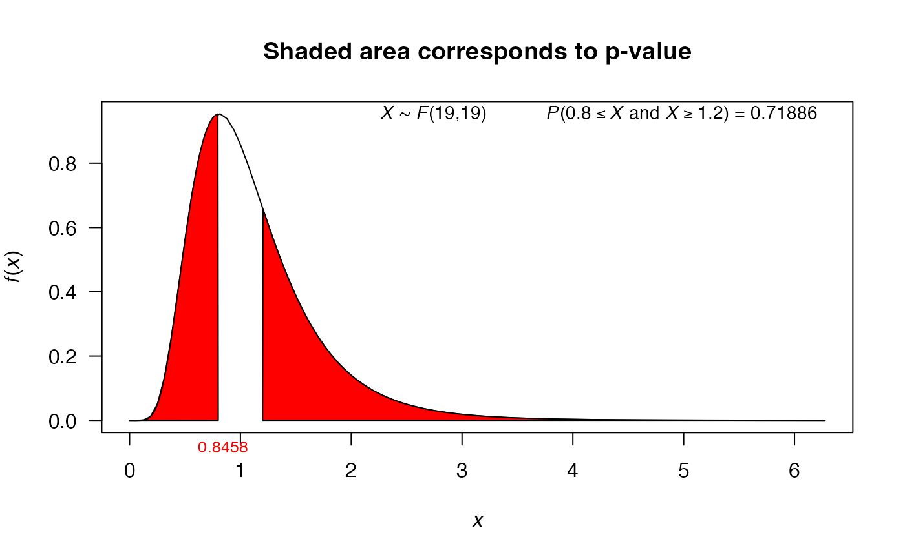
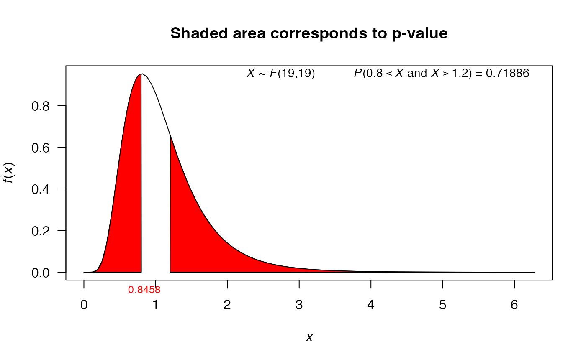

This function performs the test for a single variance or two variances using values, not the vectors.
var_test(
varx,
nx,
vary = NULL,
ny = NULL,
alternative = "two.sided",
null.value = 1,
conf.level = 0.95
)Arguments
- varx
sample variance for sample x.
- nx
sample size for sample x.
- vary
sample variance for sample y.
- ny
sample size for sample y.
- alternative
a character string specifying the alternative hypothesis, must be one of
two.sided(default),greaterorless. You can specify just the initial letter.- null.value
the hypothesized number (variance or ratio of the variances) in the null hypothesis.
- conf.level
confidence level of the interval, by default its value is 0.95.
Value
A list with class htest containing the following
components:
- statistic
the value of the statistic.
- p.value
the p-value for the test.
- conf.int
a confidence interval for the variance.
- estimate
the sample variance (or ratio of the sample variances)
- null.value
the specified hypothesized value for alternative hypothesis.
- alternative
a character string describing the alternative hypothesis.
- method
a character string indicating the type of test performed.
Examples
# Examples with ONE sample
# Example 7.7.1 from Wayne (2013), http://tinyurl.com/y6z49hrw
var_test(varx=670.81, nx=16, null.value=600, alternative='two.sided')
#>
#> X-squared test for variance
#>
#> data: varx = 670.81 and nx = 16
#> X-squared = 16.77, df = 15, p-value = 0.6656
#> alternative hypothesis: true variance is not equal to 600
#> 95 percent confidence interval:
#> 366.0509 1606.8235
#> sample estimates:
#> variance of x
#> 670.81
#>
# Exercise 7.7.5 from Wayne (2013), http://tinyurl.com/y6z49hrw
var_test(varx=30, nx=25, null.value=25, alternative='greater')
#>
#> X-squared test for variance
#>
#> data: varx = 30 and nx = 25
#> X-squared = 28.8, df = 24, p-value = 0.2277
#> alternative hypothesis: true variance is greater than 25
#> 95 percent confidence interval:
#> 0.00000 51.99147
#> sample estimates:
#> variance of x
#> 30
#>
# Using the plot to illustrate Hypothesis Test
mytest1 <- var_test(varx=30, nx=25, null.value=25, alternative='greater')
mytest1
#>
#> X-squared test for variance
#>
#> data: varx = 30 and nx = 25
#> X-squared = 28.8, df = 24, p-value = 0.2277
#> alternative hypothesis: true variance is greater than 25
#> 95 percent confidence interval:
#> 0.00000 51.99147
#> sample estimates:
#> variance of x
#> 30
#>
plot(mytest1)
 # Examples with TWO samples
# Example 7.8 from Montgomery (1996)
var_test(varx=5.1^2, nx=12, vary=4.7^2, ny=15, conf.level=0.90)
#>
#> F test to compare two variances
#>
#> data: varx = 26.01 , nx = 12 , vary = 22.09 and ny = 15
#> F = 1.1775, num df = 11, denom df = 14, p-value = 0.7605
#> alternative hypothesis: true ratio of variances is not equal to 1
#> 90 percent confidence interval:
#> 0.4589581 3.2246374
#> sample estimates:
#> ratio of variances
#> 1.177456
#>
# Example 8.17 from Montgomery (1996)
mytest2 <- var_test(varx=3.84, nx=20, vary=4.54, ny=20)
mytest2
#>
#> F test to compare two variances
#>
#> data: varx = 3.84 , nx = 20 , vary = 4.54 and ny = 20
#> F = 0.84581, num df = 19, denom df = 19, p-value = 0.7189
#> alternative hypothesis: true ratio of variances is not equal to 1
#> 95 percent confidence interval:
#> 0.3347839 2.1369100
#> sample estimates:
#> ratio of variances
#> 0.845815
#>
plot(mytest2)

# Examples with TWO samples
# Example 7.8 from Montgomery (1996)
var_test(varx=5.1^2, nx=12, vary=4.7^2, ny=15, conf.level=0.90)
#>
#> F test to compare two variances
#>
#> data: varx = 26.01 , nx = 12 , vary = 22.09 and ny = 15
#> F = 1.1775, num df = 11, denom df = 14, p-value = 0.7605
#> alternative hypothesis: true ratio of variances is not equal to 1
#> 90 percent confidence interval:
#> 0.4589581 3.2246374
#> sample estimates:
#> ratio of variances
#> 1.177456
#>
# Example 8.17 from Montgomery (1996)
mytest2 <- var_test(varx=3.84, nx=20, vary=4.54, ny=20)
mytest2
#>
#> F test to compare two variances
#>
#> data: varx = 3.84 , nx = 20 , vary = 4.54 and ny = 20
#> F = 0.84581, num df = 19, denom df = 19, p-value = 0.7189
#> alternative hypothesis: true ratio of variances is not equal to 1
#> 95 percent confidence interval:
#> 0.3347839 2.1369100
#> sample estimates:
#> ratio of variances
#> 0.845815
#>
plot(mytest2)
